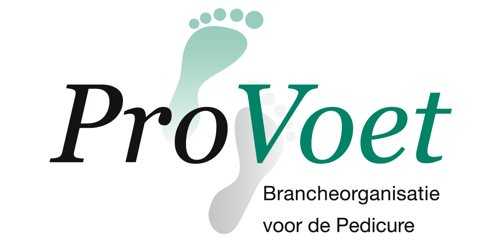

Even voorstellen
Ik ben Marcha van Gaal, getrouwd, moeder van twee zoons en woonachtig in Wouw. Vandaar ook de naam van mijn salon.
Ik heb 16 jaar in de zorg gewerkt als verzorgende IG, in de thuiszorg, de gehandicaptenzorg en het verpleeghuis. Daarna heb ik met veel passie de opleiding pedicure gedaan. Sinds 2021 ben ik medisch pedicure, en sinds 2023 heb ik mijn eigen salon in Steenbergen.
Bij mij staat professionaliteit voorop. Door mijn achtergrond in de zorg ben je bij mij ook met kwetsbare voeten in goede handen.
16 jaarin de zorg gewerkt
Sinds 2020gediplomeerd pedicure
MBO 4medisch pedicure
Eigen salonaan de Molenweg

Als lid van ProVoet heb ik een erkend diploma en werk ik volgens strikte hygiënerichtlijnen.